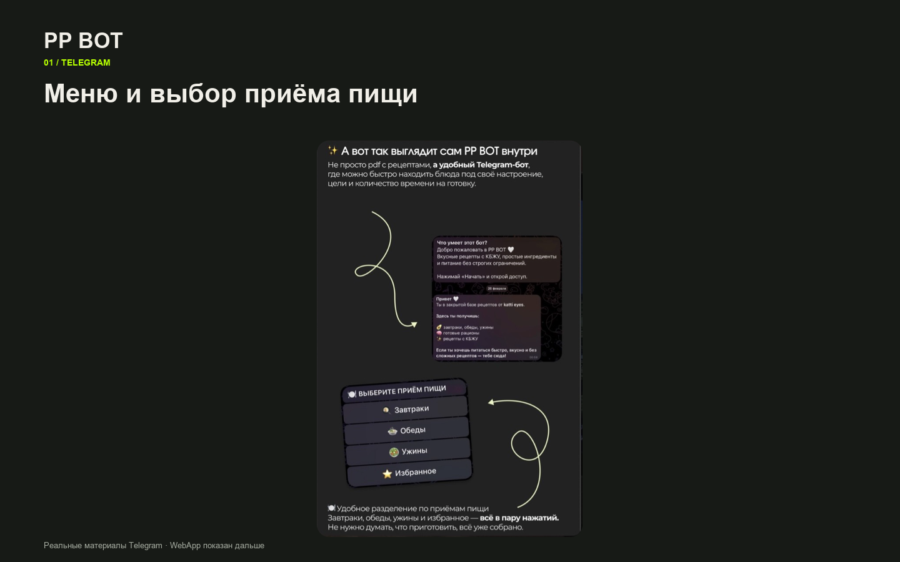
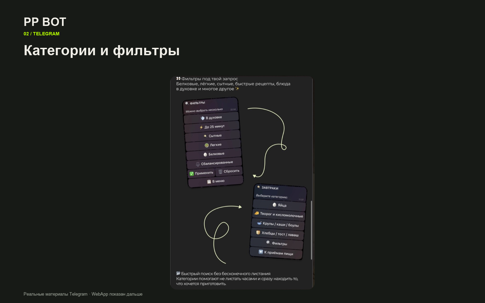
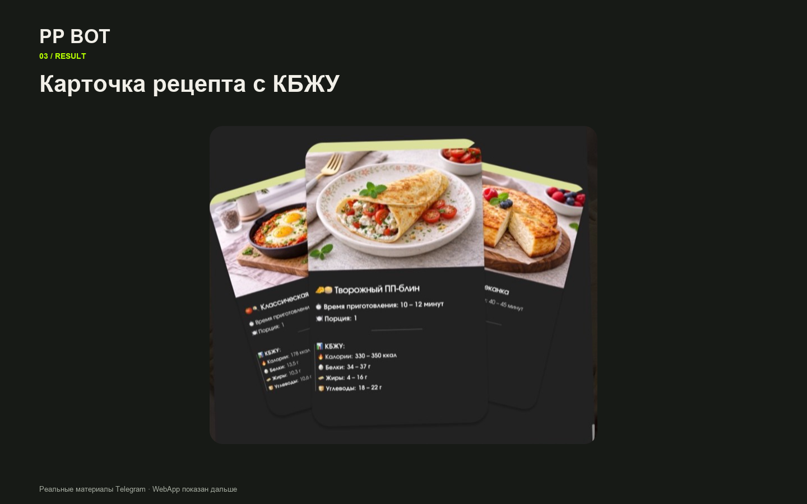

Выбор рецепта в Telegram
Меню, категории, фильтры и карточка блюда. Скриншоты собраны из переданных материалов бота.



Меню, категории, фильтры и карточка блюда. Скриншоты собраны из переданных материалов бота.


